“Não se pode reconhecer os sonhos sem pesadelos.”
O Reino
Uma Nova Utopia Social
Um épico de ficção científica onde cada tecnologia impossível vem acompanhada de pesquisas reais. A saga de uma família real que ergue, sobre as ruínas do nosso mundo, o último reino da Terra. E a pergunta que o sustenta: como seria a nossa sociedade, se fosse perfeita?
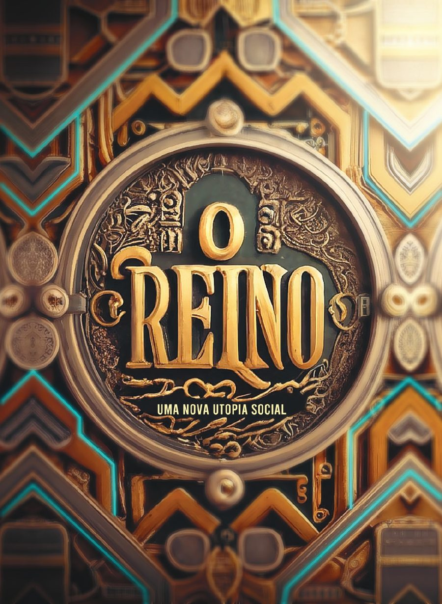
Um livro, muitas histórias
O Reino mistura gêneros como um sopro de ar fresco nas formas de contar histórias: aventura épica, fantasia sombria e ciência de verdade, tudo na mesma saga.
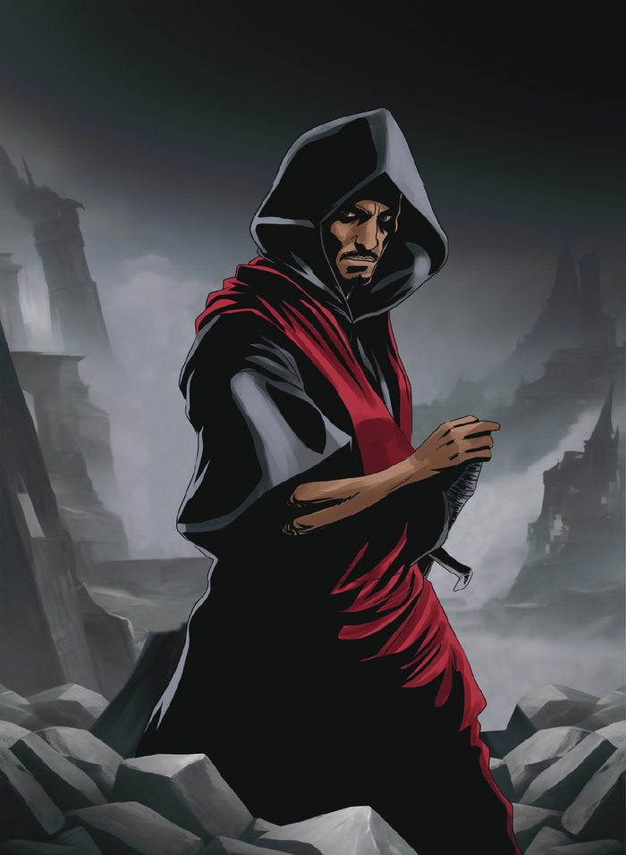
Ação e Aventura
O presente semeia uma guerra no futuro. Três raças lutam com todas as forças para se salvar, e caberá ao rei, cuja arrogância deu início ao apocalipse, impedir o cataclismo que pode destruir toda a Terra.
Batalhas épicas entre povos superpoderosos e cenas de ação de tirar o fôlego, na premiação da ONU, em submarinos, tronos e céus em chamas.
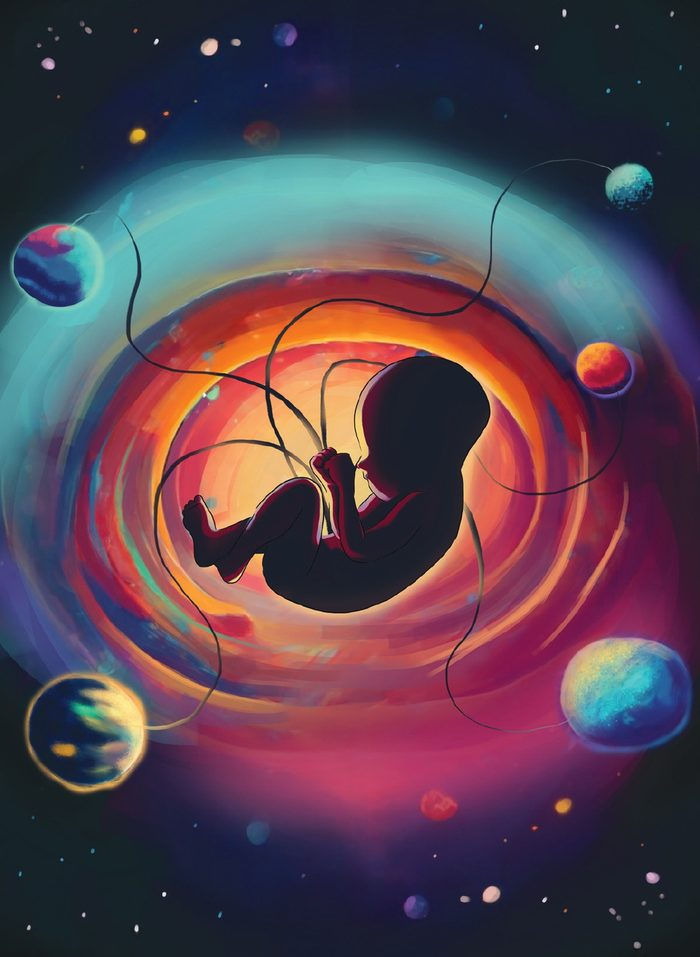
Fantasia e Terror
Num mundo muito parecido com o nosso, um novo reino se ergue para lutar contra a pobreza, a ignorância e a maldade. Ao ampliar os conhecimentos da humanidade, a ciência revela um mundo místico: anjos, energia infinita…
Mas também demônios, maldições e loucuras piores do que a morte.
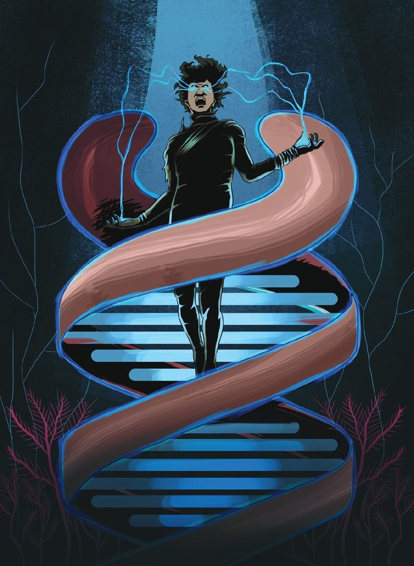
Ficção Científica e Realidade
O que é realmente impossível? Entrelaçamento quântico, edição genética, inteligência artificial: pelas tecnologias apresentadas no livro, chegamos à aprendizagem instantânea, ao teletransporte, à criação da matéria e até à imortalidade.
Cada uma delas embasada em pesquisas científicas de grandes periódicos, para o leitor conferir com os próprios olhos.
“A ficção não precisa ser uma porta de fuga da realidade, mas uma nova visão do potencial que a humanidade tem para evoluir, se expandir e dominar todas as coisas.” Josafá Raven, no prefácio
Um glossário de citações
Fontes reais citadas com link para livre conferência: UFRGS, UFRJ, BBC, revista Galileu, Embrapa, Science e Nature: ciência de verdade dentro da ficção.
Aprovado pela Seduc-AM
Classificado como paradidático, com texto aprovado pelo corpo técnico pedagógico da Secretaria de Educação do Amazonas em 2022.
15 anos de pesquisa
Uma releitura moderna da Utopia de Thomas More (1516), construída ao longo de 15 anos de estudo em história, política, ciência e filosofia.
Grandes pensadores
Francis Bacon, José Saramago, Bertrand Russell, Michel Foucault, Martin Luther King Jr., Heródoto, Einstein, Ayrton Senna: vozes que dialogam com a trama.
As ilustrações
São 22 artes, uma para cada capítulo, criadas pela equipe de especialistas da Editora Valer, com ilustrações de Josiney Encarnação.
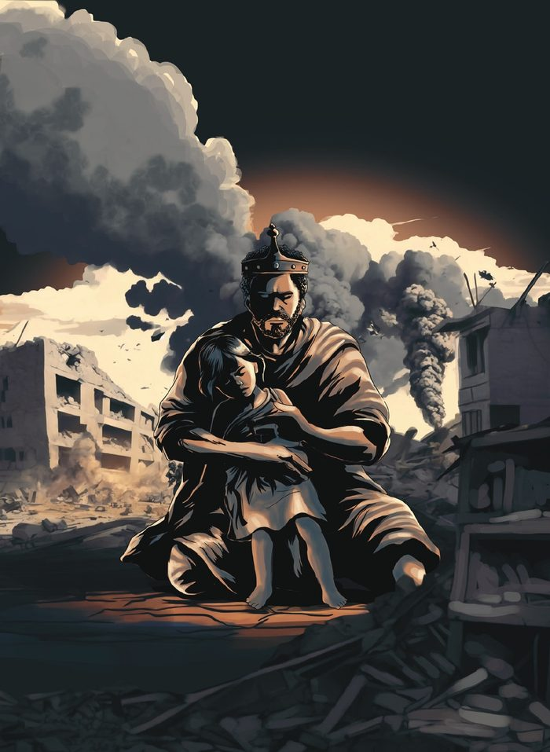
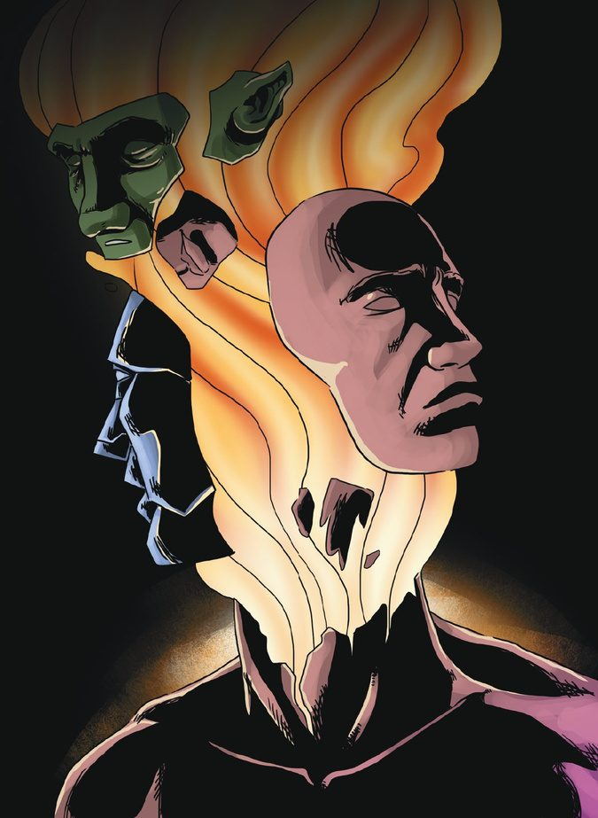
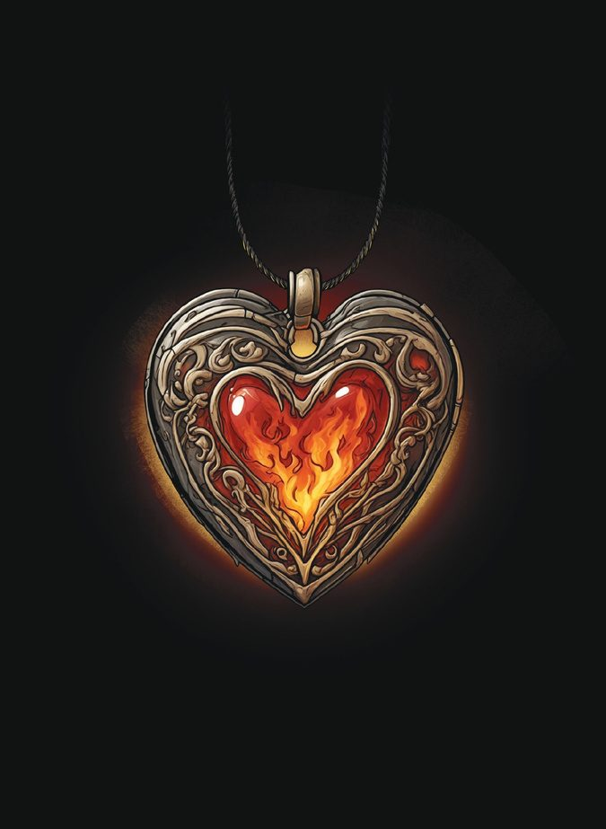
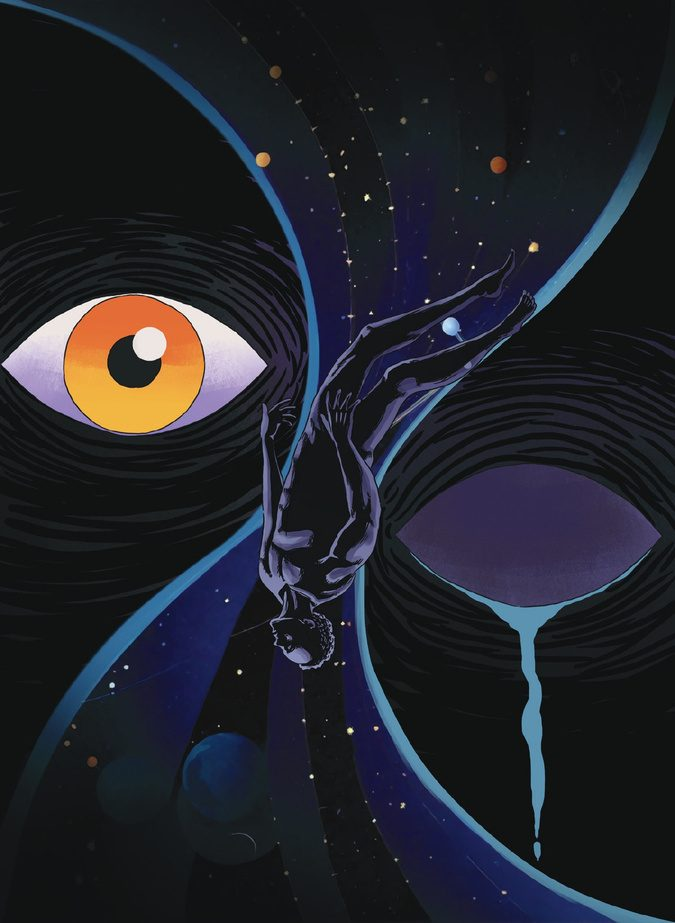
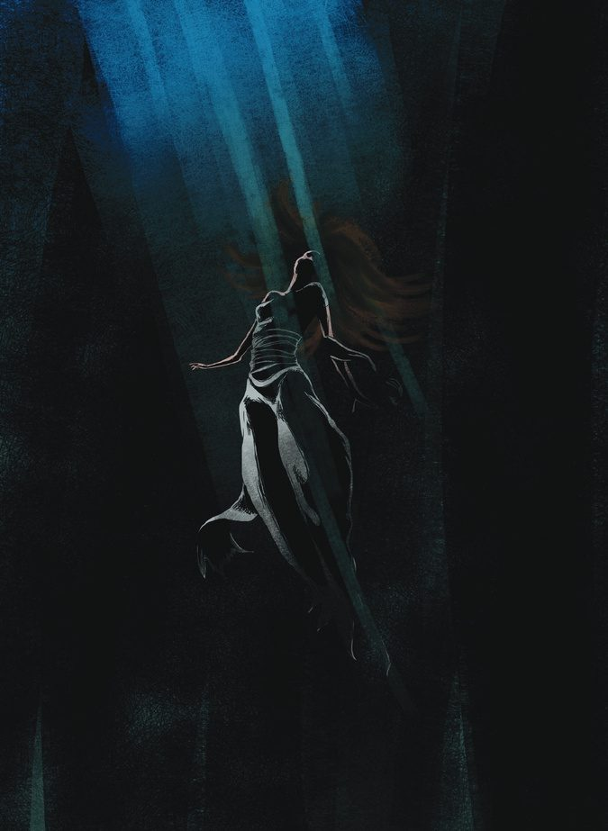
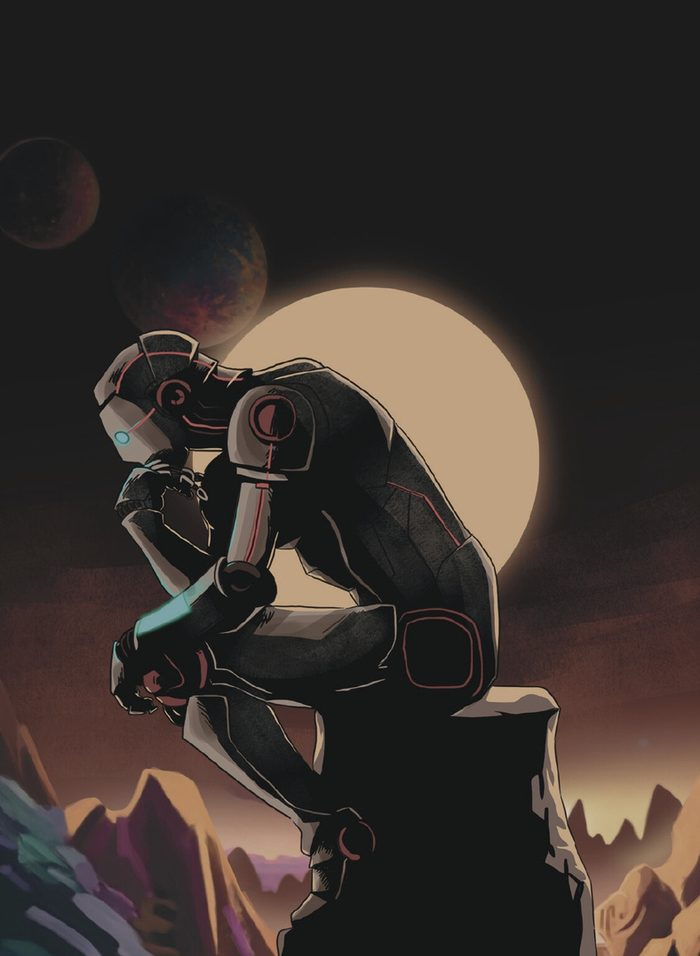
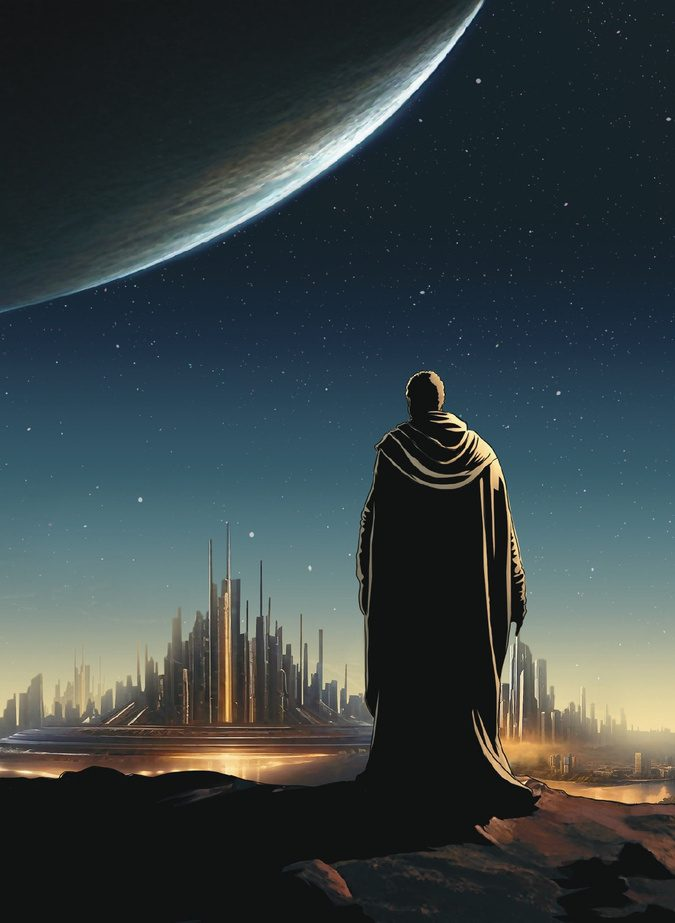
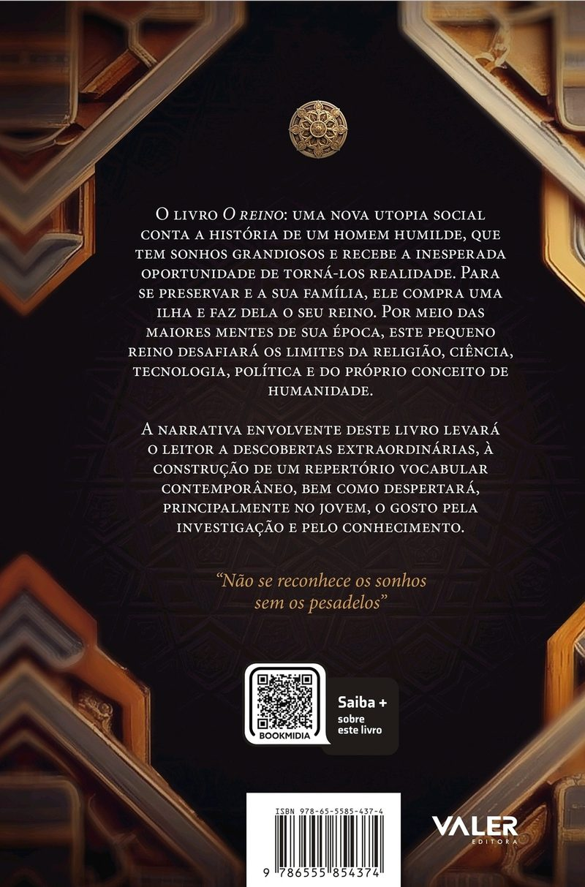
Deslize para o lado para ver mais →
Trailers do livro
Entre no clima da obra: o trailer-poema “Testemunho de Guerra” e a série “Um Novo Reino Para Uma Nova Era”.
Trailer: Poema “Testemunho de Guerra”
Um Novo Reino Para Uma Nova Era · parte 1
Um Novo Reino Para Uma Nova Era · parte 2
O autor
Arimar D. F. Silva, vulgo Josafá Raven.
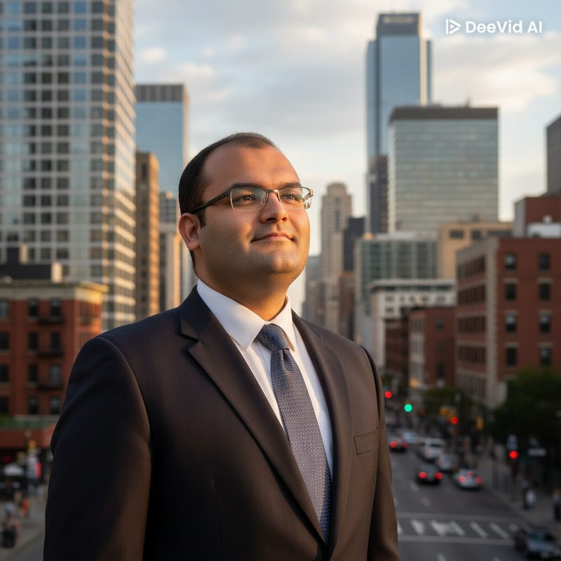
Professor licenciado em História pela Universidade Nilton Lins, com pós-graduação em Ciências Políticas e Estratégias Militares pelas faculdades La Salle, e mais de dez anos de sala de aula na rede pública do Amazonas (Seduc-AM).
“Ao experimentar a realidade da sala de aula, vi conceitos sem contexto se perderem com facilidade. Criei uma forma lúdica, didática e objetiva de ensinar ideias complexas, do liberalismo à edição genética.”
O Reino é seu primeiro trabalho publicado: fruto de 15 anos de pesquisa e desenvolvimento, nascido ainda na faculdade de História e inspirado na Utopia de Thomas More. Pai, marido e alguém que acredita no potencial humano para o bem, e na educação para libertar todo esse potencial.
Portfólio da obra
A trajetória do livro O Reino: avaliações, eventos literários e canais oficiais.
Reconhecimento institucional
Em 2022, a obra foi submetida à avaliação da Secretaria de Educação do Amazonas (Seduc-AM) para compra e distribuição no estado. O texto foi aprovado pelo corpo técnico pedagógico da Secretaria Executiva Adjunta Pedagógica (SEAP) e classificado como livro paradidático. A aquisição não avançou apenas por falta de recursos do estado à época.
A obra também recebeu avaliação do advogado e personalidade amazonense Dr. Félix Valois, em sua histórica luta de apoio aos escritores e artistas do Amazonas.
Eventos literários e culturais
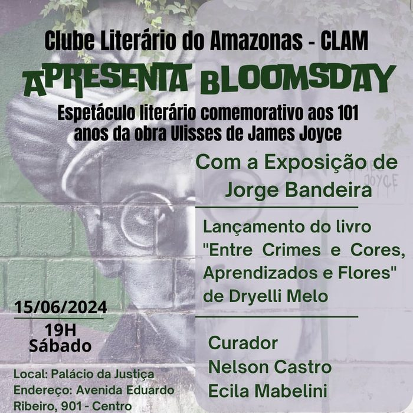
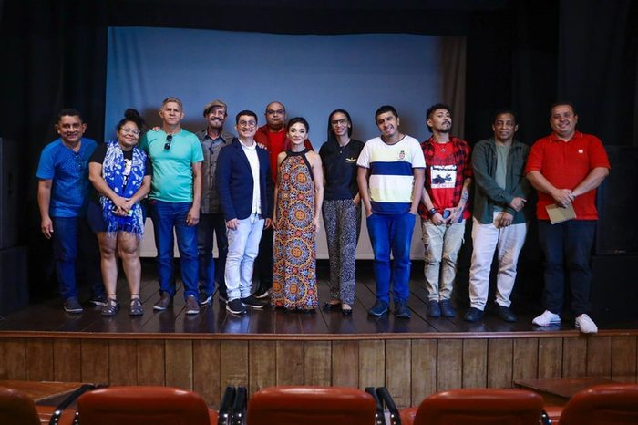
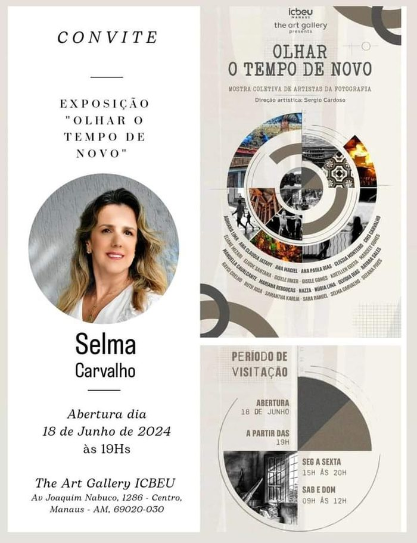
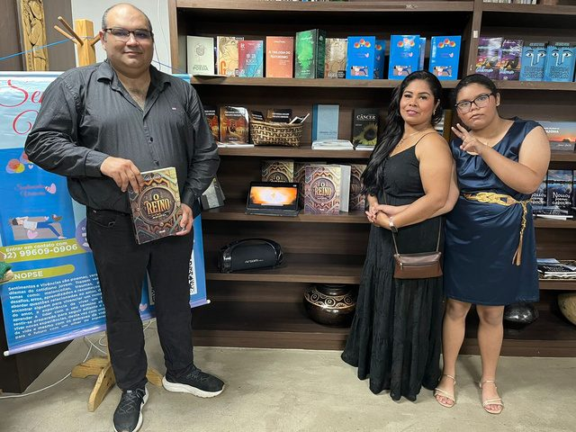
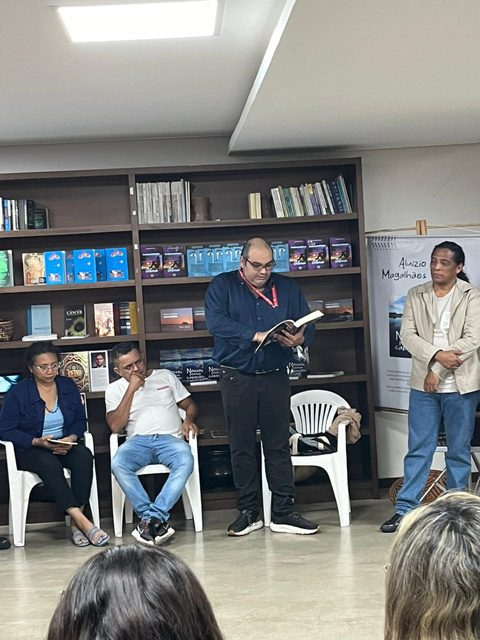
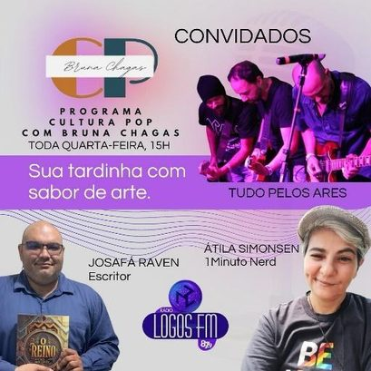
A obra também esteve na Academia Amazonense de Letras (jul/2024), no XIX Encontro Abralic no auditório da UFAM (jul/2024), em entrevista à Rádio Logos FM 87,9 (mai/2024), no programa Amazon Cidades da Alaca (2023) e na Amostra Final do Projeto SEIVA, ao lado do representante do UNICEF no Amazonas (dez/2025).
Garanta o seu exemplar
R$ 16,00
Edição digital em PDF: a mesma edição completa da Editora Valer.
- Livro completo em PDF: 530 páginas
- As 22 ilustrações originais da edição Valer
- Citações com fontes e links para livre conferência
- Entrega direta no seu WhatsApp ou e-mail
Pagamento combinado diretamente com o autor (Pix). Em breve também nas plataformas digitais de livros.